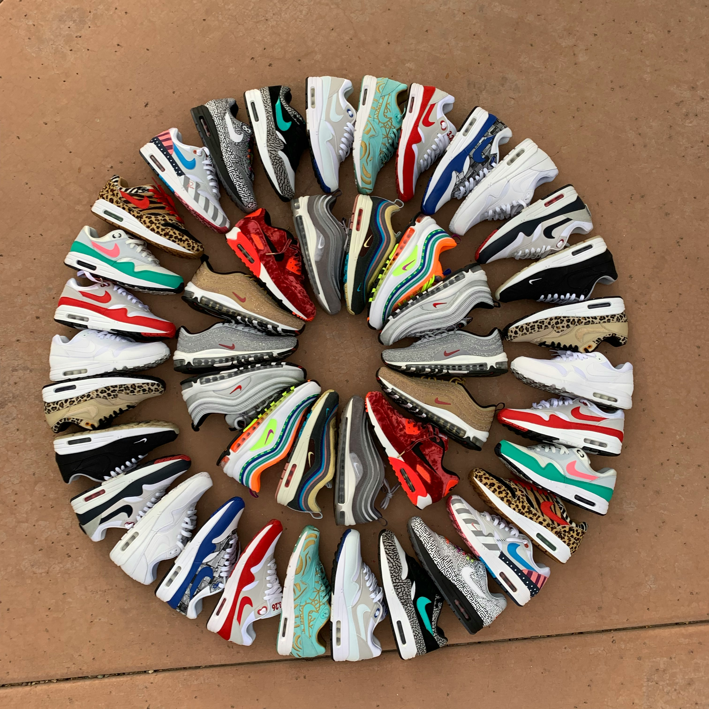

Deadstock Grails
Brand new, never-worn limited releases for serious collectors.

Step Into Something Rare
Curated resale sneakers for collectors and streetwear enthusiasts. From deadstock grails to everyday favourites, every pair is hand-picked and checked for authenticity before it reaches you.
Shop the CollectionWe source and resell rare, limited-edition and pre-owned sneakers for the local sneaker community. Whether you're chasing a specific drop, hunting for a deadstock grail, or just after a solid everyday pair at a fair price, we've got something for every kind of sneakerhead. Every pair is inspected and verified for authenticity before it's listed, so you can shop with total confidence.
Brand new, never-worn limited releases for serious collectors.
Gently used pairs in excellent condition at a fraction of retail price.
Reliable, comfortable pairs for daily wear without the hefty price tag.
Browse our current stock or tell us exactly what you're looking for.
Shop the Collection Request a Specific Pair